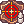
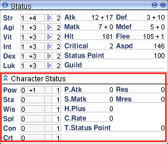

File list
Jump to navigation
Jump to search
This special page shows all uploaded files.
{kind=link}
{kind=link}
| Date | Name | Thumbnail | Size | User | Description | Versions |
|---|---|---|---|---|---|---|
| 08:01, 4 November 2015 | TirayaBonnet.png (file) |  |
6 KB | Halves | Headgear Display. | 1 |
| 21:06, 27 April 2019 | TiredNurse.gif (file) | 1 KB | Hatsumei | 1 | ||
| 04:28, 26 October 2020 | TirfingPet.png (file) | 1 KB | Randomced859 | 1 | ||
| 03:49, 26 October 2020 | TiyanakPet.png (file) | 1 KB | Randomced859 | 1 | ||
| 16:33, 7 May 2017 | Toad.gif (file) | 20 KB | Halves | 1 | ||
| 20:06, 12 November 2015 | Tokenofsiegfried.png (file) |  |
9 KB | Adri | 1 | |
| 21:07, 24 March 2019 | Tomboffallen.jpg (file) |  |
59 KB | Panic | 1 | |
| 00:59, 8 February 2020 | TomboyEMap.png (file) | 38 KB | Hatsumei | 1 | ||
| 18:18, 21 September 2018 | ToolDealerIcon.png (file) |  |
17 KB | AloeLeaflet | 1 | |
| 14:57, 18 September 2017 | Tooldealer.png (file) |  |
151 KB | AloeLeaflet | 1 | |
| 23:24, 30 September 2016 | Tooth of Warg.png (file) |  |
3 KB | Inberun | 1 | |
| 00:03, 21 March 2017 | Tornado.jpeg (file) | 6 KB | Souleaterexe | 1 | ||
| 06:26, 19 April 2022 | TornadoStorm.png (file) | 987 bytes | Miyu | 1 | ||
| 21:06, 27 April 2019 | ToySyringeMap.png (file) | 36 KB | Hatsumei | 1 | ||
| 16:36, 19 November 2015 | Toyfactory1.png (file) |  |
10 KB | Adri | 1 | |
| 17:09, 19 November 2015 | Toyfactory10.png (file) |  |
12 KB | Adri | 1 | |
| 17:12, 19 November 2015 | Toyfactory11.png (file) |  |
6 KB | Adri | 1 | |
| 17:14, 19 November 2015 | Toyfactory12.png (file) |  |
7 KB | Adri | 1 | |
| 17:16, 19 November 2015 | Toyfactory13.png (file) | 9 KB | Adri | 1 | ||
| 16:42, 19 November 2015 | Toyfactory2.png (file) |  |
8 KB | Adri | 1 | |
| 16:43, 19 November 2015 | Toyfactory3.png (file) |  |
10 KB | Adri | 1 | |
| 16:47, 19 November 2015 | Toyfactory4.png (file) | 13 KB | Adri | 1 | ||
| 16:51, 19 November 2015 | Toyfactory5.png (file) |  |
8 KB | Adri | 1 | |
| 16:57, 19 November 2015 | Toyfactory6.png (file) | 7 KB | Adri | 1 | ||
| 17:02, 19 November 2015 | Toyfactory7.png (file) |  |
9 KB | Adri | 1 | |
| 17:04, 19 November 2015 | Toyfactory8.png (file) |  |
8 KB | Adri | 1 | |
| 17:07, 19 November 2015 | Toyfactory9.png (file) |  |
6 KB | Adri | 1 | |
| 09:46, 13 November 2015 | Toyfactoryguard.gif (file) |  |
52 KB | Adri | 1 | |
| 20:03, 15 December 2015 | Toyshield.png (file) |  |
524 bytes | Adri | 1 | |
| 14:37, 8 September 2016 | Tracking.png (file) |  | 619 bytes | Appleproject | 1 | |
| 23:30, 8 October 2018 | TraderGeffenshop.png (file) | 299 KB | AloeLeaflet | 1 | ||
| 19:47, 14 June 2022 | TrainingChamberLayout.PNG (file) | 207 KB | HairyWizard | Some useful NPCs outlined in the training chamber. | 1 | |
| 19:42, 14 June 2022 | TrainingChamberNPC.PNG (file) | 209 KB | HairyWizard | Just an image showing the location of the Training Chamber NPC in Prontera. | 1 | |
| 22:44, 17 March 2019 | TrainingChm.gif (file) |  |
3 KB | Panic | 1 | |
| 08:23, 16 April 2022 | Traitstatus.png (file) |  | 14 KB | Miyu | Trait tab | 1 |
| 20:34, 7 September 2016 | TransportVD.png (file) | 395 KB | Mayo | 1 | ||
| 00:48, 4 September 2015 | TrapSpecialist.jpg (file) | 52 KB | Renata | 1 | ||
| 23:12, 10 October 2016 | Trap Research.png (file) |  |
3 KB | Inberun | 1 | |
| 16:35, 7 September 2016 | TrappVD.png (file) |  |
274 KB | Mayo | 1 | |
| 04:12, 18 March 2019 | Treasury.png (file) |  |
1.99 MB | Panic | 1 | |
| 13:52, 18 January 2019 | Tree of Life.png (file) | 2.77 MB | Hakumen | 3 | ||
| 13:58, 18 January 2019 | Tree of Life 2.png (file) | 2.77 MB | Hakumen | placeholder | 1 | |
| 11:52, 22 January 2020 | Triangle Shot.png (file) | 463 bytes | JoaoAlkmim | 1 | ||
| 14:37, 8 September 2016 | Tripleaction.png (file) |  |
668 bytes | Appleproject | 1 | |
| 15:02, 9 October 2019 | Trishot Hotkey.PNG (file) |  |
17 KB | Cinderfire | 1 | |
| 21:28, 22 June 2016 | Trivia.jpg (file) |  |
100 KB | Mayo | 1 | |
| 09:02, 14 August 2021 | Trouble.png (file) |  |
196 KB | Ikey | 1 | |
| 09:05, 14 August 2021 | Troublesolve.PNG (file) |  |
34 KB | Ikey | 1 | |
| 03:16, 5 March 2018 | True or false.png (file) | 36 KB | AloeLeaflet | 1 | ||
| 22:43, 3 October 2019 | Ttkdisable.png (file) |  |
52 KB | Hatsumei | 1 |
{kind=link}
{kind=link}
{kind=link}
{kind=link}
{kind=link}
{kind=link}
{kind=link}
{kind=link}
{kind=link}
{kind=link}
{kind=link}
{kind=link}
{kind=link}
{kind=link}
{kind=link}
{kind=link}
{kind=link}
{kind=link}
{kind=link}
{kind=link}
{kind=link}
{kind=link}
{kind=link}